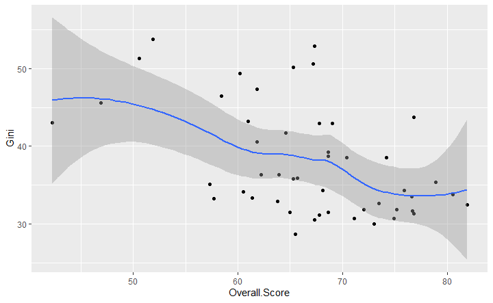
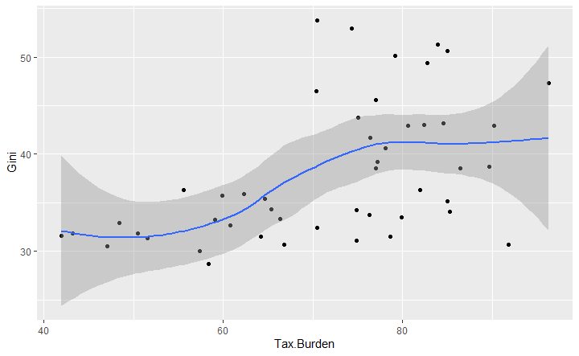
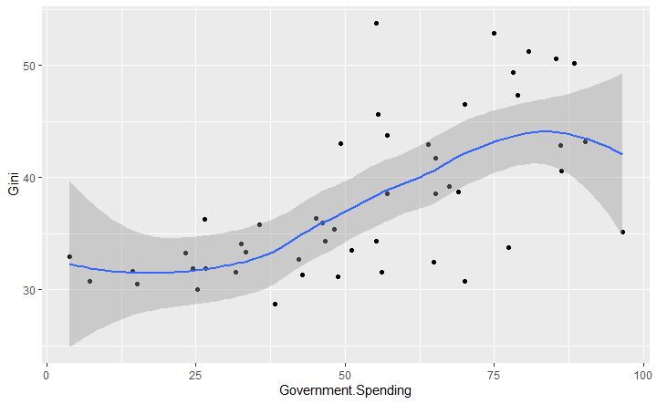

Conservative politicians and economists have long propounded the theory that “economic freedom,” or laissez-faire capitalism in the extreme is the only viable route to economic prosperity. However, very little is said of how well this affects economic inequality. Inherently, classical and neoclassical economics glosses over the point of distribution, focusing rather on maximizing total economic profit. Conservative thinkers often sweep aside concerns about income inequality with moralistic and reductionist arguments about pulling oneself up by the bootstraps. While Newton’s third law would seem to preclude the possibility, it’s worth asking if countries that are more “economically free” as defined by the conservative think tank the Heritage Foundation, are conducive to people pulling themselves up by the bootstraps and overcoming income inequality. While this measure of economic freedom has been criticized as freedom only for big businesses and the ultra-wealthy, one might ask how much of this freedom “trickles down.”
A handful of studies have been performed looking for a relationship between economic freedom and income inequality, many with inconclusive or mixed results. The most comprehensive and one of the most recent studies related income inequality to the Fraser Institute’s Economic Freedom of the World survey and found that greater economic freedom correlated positively with increased income inequality, but that the effect was mitigated by the presence of a democratic political regime. Mahyudin Ahmad, Economic Freedom and Income Inequality: Does Political Regime Matter, ECONOMIES 5, no. 2: 18 (2017). A major difference between the Fraser Institute’s Economic Freedom of the World survey and the Heritage Foundation’s Index of Economic Freedom is that the Heritage Foundation’s index relies more heavily on its indicators of institutional quality, such as rule of law, protection of property, and the provision of sound money, which are fuzzy indices at best, and oft-ridiculed. Nevertheless, they serve to better capture the essence of the conservative political regime the Heritage Foundation propounds and which this study will put to the test. Inclusion of such indicators has also been found to decrease the predictive power of both the Heritage Foundation’s and the Fraser Institute’s respective indices, but they are still the two predominant measures used and largely consistent. Jan Ott, Measuring Economic Freedom: Better Without Size of Government, SOC. INDIC. RES. 135, no. 2: 479 (2018). This study relates the Heritage Foundation’s Index as it is, for the aforementioned reasons, to income inequality, and it will also relate some individual indicators and various combinations thereof to it, because those indicators of institutional quality seem prone to obfuscate the index’s predictive power.
This study combines datasets produced by the United Nations University World Income Inequality Database (WIID) and the Heritage Foundation Index of Economic Freedom. The United Nations University World Institute for Development Economics Research is a research and training center within the academic arm of the United Nations, and its aim is to promote equitable development worldwide by providing economic analysis and policy advice. The WIID is available for free and is the most comprehensive set of statistics on income inequality. Its data are curated from several sources, including the Luxembourg Income Study, Eurostat, the Socio-Economic Database for Latin America and the Caribbean, the United Nations, household survey statistics from national statistical offices, and the Organisation for Economic Co-operation and Development.
The Heritage Foundation is a conservative, American think tank promoting laissez-faire capitalism, small government, strong national defense, and “traditional American values.” The Heritage Foundation Index of Economic Freedom is calculated from statistics curated from a wide variety of sources, including the African Development Bank and Organisation for Economic Co-operation and Development, Asian Development Bank, the United Nations, national statistical agencies, Deloitte, Eurostat, International Monetary Fund, World Economic Outlook Database, Organisation for Economic Co-operation and Development, the United States Central Intelligence Agency, the Department of Commerce, the Department of State, the University of Oxford, the World Bank, and the World Trade Organization. The data from the WIID and the Index are matched by country and most recent year, so that the data on income inequality from the WIID can be related to indicators of “economic freedom,” according to the Heritage Foundation.
There are few if any ethical questions to consider in working with this data except to acknowledge that the Heritage Foundation Index is contrived with the aim of advancing a conservative worldview and should be understood as such, rather than as an objective measure of some scientifically verifiable reality. Consequently, that is a major limitation of working with this data. Necessarily, any measure of economic freedom must be fuzzy, because “freedom” is not an objectively observable phenomenon. Nevertheless, it is appropriate for the purposes of this study, as it is a very faithful representation of the prominent conservative economic worldview and will serve to measure the extent of implementation of that view. Further, there is the issue that the Gini coefficient used by the WIID to measure income inequality, while fairly accurate and very widely used, has its limitations. For example, it is a measure of relative inequality, rather than absolute, so countries with vastly different amounts of wealth can have similar coefficients, which doesn’t necessarily capture the direness of the issue of income inequality in some countries as opposed to others. Further, one coefficient cannot take into account the details of the shape of an income distribution, which may say even more about the issue of inequality than the aggregate relative relationship.
Interestingly, upon relating the Gini coefficient to the Heritage Foundation’s Overall Economic Freedom Index, we find a negative correlation, which is to say that with greater economic freedom—as defined by the Heritage Foundation, it appears that income inequality decreases. This is contrary to the findings of the Ahmad study, cited above, but might be explained by the inherently contrived nature of the index, which the Heritage Foundation has defined so arbitrarily as to have little predictive power compared to its analogs.
This understanding is supported by the patterns we see when we compare the Gini coefficient to two more objective measures relating directly to specific policies conservative groups like the Heritage Foundation oppose. Specifically, those measures are the Tax Burden Index (which increases as taxes on the wealthiest individuals and corporations decreases) and the Government Spending Index (which relates inversely to spending on things such as welfare programs to support those in need). Unsurprisingly, there is a clearly upward trend in income inequality as taxes on the wealthy decrease and when government spending decreases.
 